GTA VI contro GTA V
GTA VI vs GTA V:
tutto quello che cambia, punto per punto.
Tredici anni separano i due giochi. Questa tabella mette a confronto ciò che Rockstar ha confermato per GTA VI e ciò che sappiamo di GTA V, riga per riga, con la fonte e la pagina del sito che approfondisce ogni punto. Ciò che non è annunciato resta vuoto, e lo diciamo.
A confronto
GTA VI e GTA V in una tabella
Ogni riga: ciò che è confermato per GTA VI, il riferimento di GTA V, e la pagina del sito che ne parla.
GTA VI: Lo Stato di Leonida: Vice City, le Leonida Keys, Grassrivers, Port Gellhorn, Ambrosia e il Mount Kalaga National Park.
La stampa lo paragona alla Florida; Rockstar non la nomina.
Ufficialerockstargames.com/VI
GTA V (riferimento della serie): Lo Stato di San Andreas, ispirato alla California del Sud: la città di Los Santos e la contea di Blaine.
Riferimento della serieRockstar Newswire
GTA VI: Due: Lucia Caminos e Jason Duval, una coppia che deve fidarsi l’uno dell’altra.
Ufficialerockstargames.com/VI
GTA V (riferimento della serie): Tre: Michael, Franklin e Trevor, giocabili insieme, tra cui si passa in qualsiasi momento.
Riferimento della serieRockstar Newswire
GTA VI: Nessuna superficie in cifre. Secondo le cifre di Rob Nelson (Rockstar North), riportate da TGG il 27 agosto 2026: due volte la mappa di GTA V e tre volte quella di Red Dead Redemption 2; il New York Times attribuisce allo studio il confronto con l’area giocabile di Red Dead Redemption 2.
Sei regioni ufficiali. Le parole esatte sono citate più sotto.
Visto in un mediaTGG, YouTube
GTA V (riferimento della serie): Nemmeno qui una superficie ufficiale: Rockstar non ha mai pubblicato una cifra in km².
Riferimento della serieRockstar Newswire
GTA V (riferimento della serie): PlayStation 3 e Xbox 360 il 17 settembre 2013; PS4 e Xbox One il 18 novembre 2014; PC il 14 aprile 2015; PS5 e Xbox Series il 15 marzo 2022.
Riferimento della serieRockstar Newswire
GTA VI: Standard e Ultimate; l’Ultimate aggiunge sedici contenuti. Bonus di preordine: il Pack Vintage Vice City e un mese di GTA+.
UfficialeRockstar Support
GTA V (riferimento della serie): Edizione standard, Special Edition (79,99 $) e Collector’s Edition (149,99 $) al lancio.
Riferimento della serieRockstar Newswire
GTA VI: 79,99 $ per la Standard e 99,99 $ per l’Ultimate negli Stati Uniti, annunciati da Take-Two; 79,99 € e 99,99 € sul PlayStation Store e sul Microsoft Store.
I prezzi in euro sono quelli mostrati dagli store il 16 ottobre 2026: controlla sul tuo.
UfficialeTake-Two
GTA V (riferimento della serie): 59,99 $ per l’edizione standard negli Stati Uniti al lancio, nel 2013.
Riferimento della seriePlayStation.Blog
GTA VI: Annuncio con un primo video il 4 dicembre 2023; uscita il 19 novembre 2026, precaricamento dal 12.
UfficialeRockstar Newswire
GTA V (riferimento della serie): Annuncio ufficiale il 25 ottobre 2011, primo video il 2 novembre; uscita il 17 settembre 2013.
Riferimento della serieGame Developer
GTA VI: Nessun annuncio: GTA VI è presentato come un’esperienza per giocatore singolo.
Da confermareRockstar Newswire
GTA V (riferimento della serie): GTA Online, lanciato il 1° ottobre 2013, due settimane dopo il gioco.
Riferimento della serieRockstar Newswire
GTA VI: Sei stazioni radio presentate l’8 ottobre 2026, con i loro conduttori, e un album ufficiale.
UfficialeRockstar Newswire
GTA V (riferimento della serie): Diciassette stazioni al lancio: quindici musicali e due parlate, 240 brani su licenza.
Riferimento della serieRockstar Newswire
- Ufficiale confermato da Rockstar
- Visto in un media visto in un media, con la sua fonte e la sua data
- Riferimento della serie riferimento della serie
- Da confermare da confermare
Parola per parola
La mappa di GTA VI contro quella di GTA V: cosa ha detto Rockstar
Nessuna cifra ufficiale. Quello che ha detto Rockstar North, come riportato il 27 agosto 2026: da un creator invitato allo studio, che cita Rob Nelson, poi dal New York Times, che cita lo studio. Le parole sono riportate così come sono, in inglese.
The map is twice the size of GTA 5’s map
the studio said, is three times as large as the playable area
Rockstar non ha mai pubblicato queste cifre sul suo sito né sul suo Newswire: Rob Nelson, che codirige Rockstar North, le ha date ai creator invitati allo studio a luglio 2026, e sono state riportate il 27 agosto, il giorno di An Extended Look. Secondo le stesse cifre, Vice City da sola sarebbe due volte Los Santos, la città di GTA V. Il New York Times ha confermato con lo studio il confronto con Red Dead Redemption 2.
Non esiste nessuna superficie in km², né per GTA VI né per GTA V: Rockstar non ne ha mai pubblicata una. Sul sito, la mappa interattiva censisce i luoghi individuati nei media ufficiali, regione per regione; non misura la superficie del gioco.
 GTA VIil doppio della superficie, secondo le cifre di Rob Nelson
GTA VIil doppio della superficie, secondo le cifre di Rob Nelson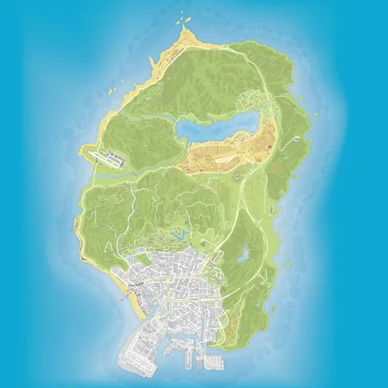
GTA Vla superficie di riferimentoGTA V sta nella metàVisto in un media Il doppio della mappa di GTA V: è ciò che TGG riporta dalle parole di Rob Nelson, di Rockstar North. I quadrati mostrano questo rapporto, non una misura: Rockstar non ha pubblicato nessuna superficie, per nessuno dei due giochi. Lo sfondo del quadrato di GTA V è la mappa del gioco, così come appare in GTA V. Lo sfondo del quadrato di GTA VI è la mappa del sito, una ricostruzione della community.
Apri la mappa di LeonidaLe sei regioni
Le sei regioni di Leonida, in immagini
Cosa Rockstar ha mostrato di ogni regione: una pagina per regione, con i suoi luoghi individuati sulla mappa.
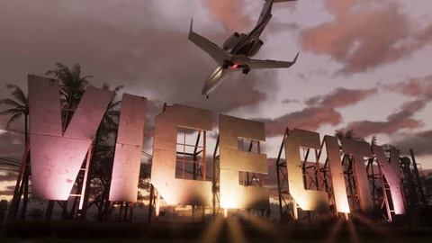
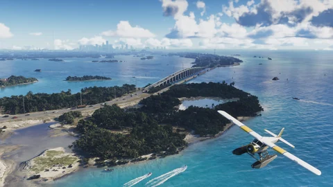
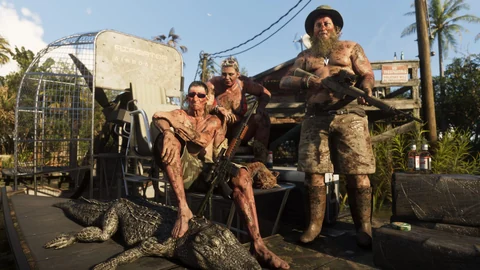
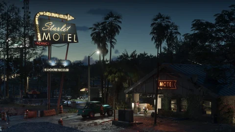
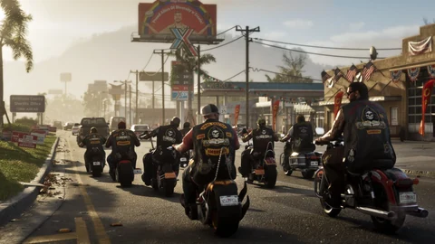
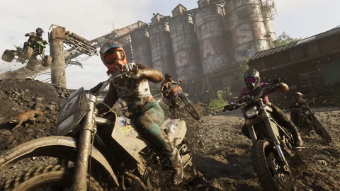
Visto nelle presentazioni
Le novità viste rispetto a GTA V
Sei cose mostrate nei video e nelle presentazioni ufficiali, che GTA V non faceva così. Ognuna porta alla pagina del sito che la approfondisce.
Due protagonisti che giocano insieme
Lucia e Jason condividono la storia: si passa dall’uno all’altra, e la loro relazione fa parte del gioco.Visto in un mediaVideo ufficialiVedi la scheda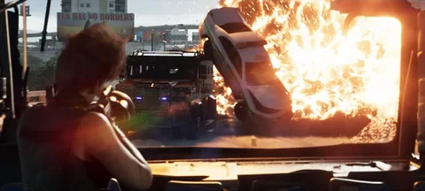
Una polizia che riconosce la tua auto e il tuo outfit
Cambiare veicolo o vestiti aiuta a seminare la polizia: cerca in base al tuo abbigliamento, al tuo aspetto e alla tua auto, ha spiegato Rob Nelson di Rockstar North.Visto in un mediaFamitsu, 28 agosto 2026Vedi la scheda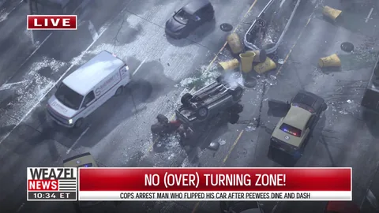
Un social network nel gioco
I video ufficiali mostrano un social network dove gli abitanti di Leonida pubblicano quello che succede in città.Visto in un mediaTrailer 2, 6 maggio 2025Vedi la scheda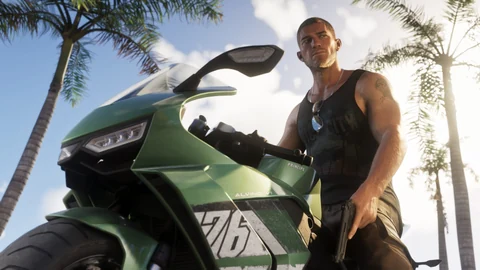
Più modi per rubare un’auto
Rompere un finestrino, scassinare la serratura o forzarla: le presentazioni mostrano diversi metodi, più o meno rumorosi.Visto in un mediaVideo ufficialiVedi la scheda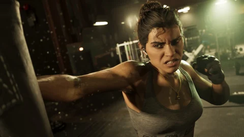
Il peso che cambia con quello che si mangia
Quello che mangiano Jason e Lucia influisce sulla loro corporatura, e la palestra li rende muscolosi: lo ha spiegato Rob Nelson di Rockstar North.Visto in un mediaFamitsu, 28 agosto 2026Vedi la scheda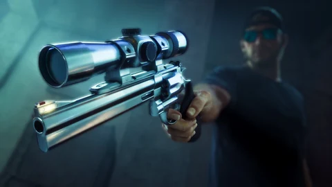
Una ruota dell’equipaggiamento in due parti
Armi da una parte, oggetti dall’altra: la ruota vista in An Extended Look separa l’arsenale e l’equipaggiamento.Visto in un mediaVideo ufficialiVedi la scheda
Da dove viene ogni novità: Video ufficiali, Famitsu, Trailer 2
Non ancora confrontabile
Quello che non si può ancora mettere a confronto
Queste righe aspettano il gioco o un annuncio. I numeri di GTA V esistono; quelli di GTA VI, non ancora.
Il numero di veicoli
Rockstar non ha pubblicato alcun totale per GTA VI. Il sito elenca 302 veicoli visti nei media ufficiali, ognuno con la sua scheda.Vedi i veicoliI prezzi in gioco
Nessun prezzo di veicoli, armi o case è stato pubblicato per GTA VI. Quelli del sito sono riferimenti di GTA V e GTA Online, segnalati come tali.Cosa sappiamoLa durata della storia
Nessuna durata ufficiale per GTA VI. Rob Nelson dice di aver finito la sua partita in circa 80 ore, con una parte degli obiettivi facoltativi, secondo il New York Times: una testimonianza, non un dato.Cosa sappiamoIl peso del gioco
Non comunicato per GTA VI. Sarà noto al più tardi all’apertura del precaricamento, il 12 novembre 2026.La dimensione, al precaricamentoI trucchi
Niente di annunciato per GTA VI. GTA V ne aveva fin dal lancio; le liste “GTA 6” che circolano non sono ufficiali.Vedi i trucchiLa modalità online
Nessun annuncio per GTA VI, nemmeno una data. GTA Online è arrivato due settimane dopo GTA V.GTA Online e GTA 6
Domande
Le domande che ci si fa su GTA 6 vs GTA 5
La mappa di GTA 6 è più grande di quella di GTA 5?
GTA 6 è il seguito di GTA 5?
GTA 6 è ambientato a Vice City come nel 2002?
Quanti personaggi giocabili ci sono in GTA 6?
GTA 6 costerà più di GTA 5?
Fonti
Da dove viene ogni riga della tabella
Rockstar per GTA VI; per GTA V, le pagine e gli annunci di Rockstar, letti come riferimenti della serie.
- UfficialeSito ufficiale di Grand Theft Auto VI
Leonida, Vice City e le regioni; Lucia Caminos e Jason Duval.
- UfficialeRockstar Newswire: Grand Theft Auto VI uscirà il 19 novembre 2026
La data di uscita di GTA VI: il 19 novembre 2026.
- UfficialeRockstar Support: Grand Theft Auto VI, piattaforme, edizioni e versioni
Le due edizioni, i sedici contenuti dell’Ultimate, i bonus preordine, la scatola e il precaricamento.
- UfficialeRockstar Newswire: preordinare Grand Theft Auto VI il 25 giugno
GTA VI “features a single player experience”, il 19 novembre su PlayStation 5 e Xbox Series X|S; nessun annuncio su una modalità online.
- UfficialeRockstar Newswire: la musica di Grand Theft Auto VI, le stazioni radio
Sei stazioni radio presentate, con i loro conduttori, e l’album ufficiale.
- UfficialeRockstar Games: i video ufficiali di Grand Theft Auto VI
I quattro video ufficiali, tra cui An Extended Look (27 agosto 2026), catturato in gioco su PlayStation 5, e il trailer di lancio (15 ottobre 2026).
- UfficialeRockstar Games: Trailer 2 di Grand Theft Auto VI
Le sequenze del Trailer 2: polizia, personaggi, veicoli.
- UfficialeTake-Two Interactive: Rockstar Games annuncia i preordini di Grand Theft Auto VI
Standard Edition a 79,99 $, Ultimate Edition a 99,99 $; precaricamento dal 12 novembre 2026.
- UfficialePlayStation Store: Grand Theft Auto VI
Prezzi mostrati: 79,99 € (Standard) e 99,99 € (Ultimate); uscita il 19 novembre 2026; precaricamento 7 giorni prima.
- Visto in un mediaTGG (YouTube): “I Saw 3 Hours of GTA 6 at Rockstar North”, 27 agosto 2026
Il creator riporta i numeri dati da Rob Nelson: due volte la mappa di GTA V, tre volte quella di Red Dead Redemption 2, Vice City due volte Los Santos.
- Visto in un mediaKotaku: la mappa di GTA 6, tre volte più grande di Red Dead Redemption 2
Trascrizione delle parole di TGG, con il nome di Rob Nelson aggiunto dalla redazione.
- Visto in un mediaThe New York Times: “Grand Theft Auto VI Has a New Trailer and Grand Ambitions”
Secondo lo studio, l’intera mappa è tre volte l’area giocabile di Red Dead Redemption 2 (articolo a pagamento, letto nella ripresa di The Nightly).
- Riferimento della serieRockstar Newswire: GTAV e GTA Online arrivano il 15 marzo su PlayStation 5 e Xbox Series
GTA V e GTA Online su PlayStation 5 e Xbox Series X|S il 15 marzo 2022; Franklin, Michael e Trevor, Los Santos e la contea di Blaine.
- Riferimento della serieRockstar Newswire: Grand Theft Auto V è disponibile (17 settembre 2013)
GTA V è uscito il 17 settembre 2013 su PlayStation 3 e Xbox 360: Los Santos e la contea di Blaine, tre personaggi giocabili insieme, e GTA Online annunciato per il 1° ottobre.
- Riferimento della serieRockstar Newswire: Grand Theft Auto V è disponibile su PC (14 aprile 2015)
La versione PC di GTA V è uscita il 14 aprile 2015, dopo PS4 e Xbox One (18 novembre 2014) e prima di PS5 e Xbox Series (15 marzo 2022).
- Riferimento della serieRockstar Newswire: le date di uscita di Grand Theft Auto V su PS4, Xbox One e PC
GTA V su PlayStation 4 e Xbox One il 18 novembre 2014; la versione PC annunciata per gennaio 2015, poi rinviata.
- Riferimento della serieRockstar Newswire: le edizioni Special e Collector’s di Grand Theft Auto V (23 maggio 2013)
Tre edizioni al lancio: standard, Special Edition a 79,99 $ e Collector’s Edition a 149,99 $; Michael, Franklin e Trevor.
- Riferimento della serieRockstar Newswire: GTA Online, i dettagli del giorno del lancio (30 settembre 2013)
GTA Online ha aperto il 1° ottobre 2013, due settimane dopo GTA V, con un piccolo aggiornamento da scaricare.
- Riferimento della serieRockstar Newswire: la colonna sonora di GTAV, interviste e dettagli (30 agosto 2013)
Quindici stazioni musicali, due stazioni parlate e 240 brani su licenza al lancio di GTA V.
- Riferimento della serieRockstar Newswire: il comunicato di Grand Theft Auto V (3 novembre 2011)
GTA V “in pieno sviluppo”, a Los Santos; il primo video era appena uscito, il 2 novembre 2011.
- Riferimento della seriePlayStation.Blog: aggiornamento del PlayStation Store del 17 settembre 2013
Grand Theft Auto V su PS3 a 59,99 $ sul PlayStation Store americano il giorno dell’uscita.
- Riferimento della serieGame Developer: Rockstar annuncia ufficialmente Grand Theft Auto V (25 ottobre 2011)
Il 25 ottobre 2011 Rockstar conferma GTA V: il logo sul suo sito e il primo video annunciato per mercoledì 2 novembre.
- Visto in un mediaFamitsu: intervista a Rob Nelson di Rockstar North (28 agosto 2026)
Rob Nelson, responsabile dello sviluppo e codirettore di Rockstar North: la polizia cerca in base ad abbigliamento, aspetto e veicolo, e cambiarsi d’abito aiuta a fuggire; si può prendere peso mangiando molto, e la palestra sviluppa salute e forza.